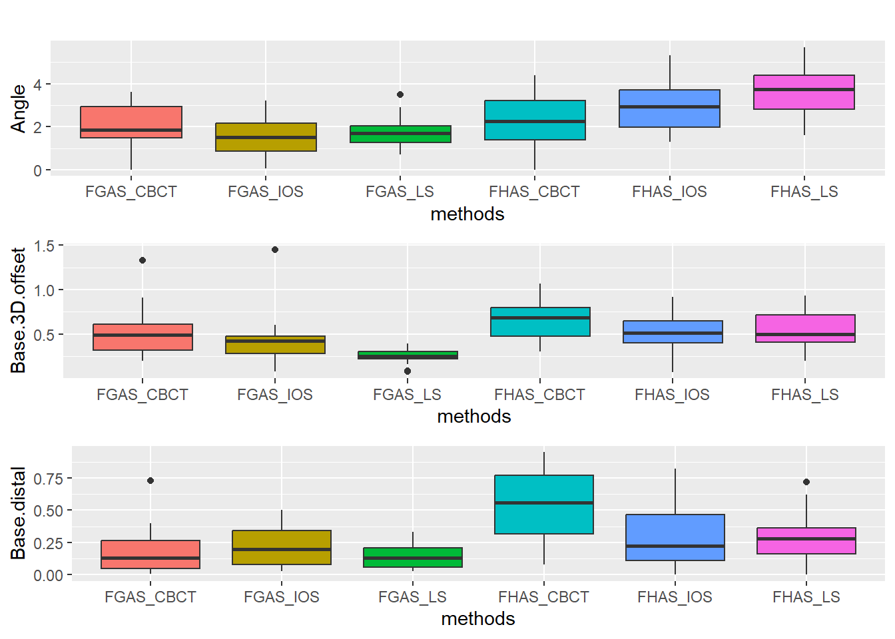
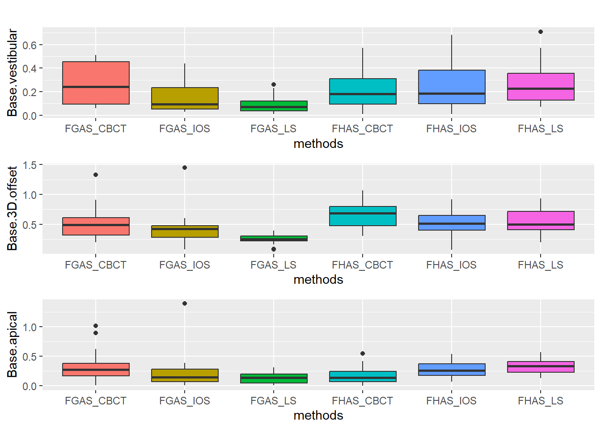
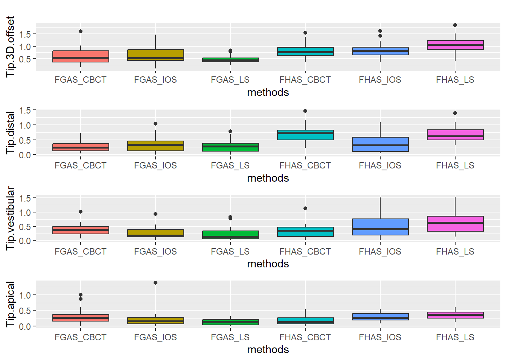
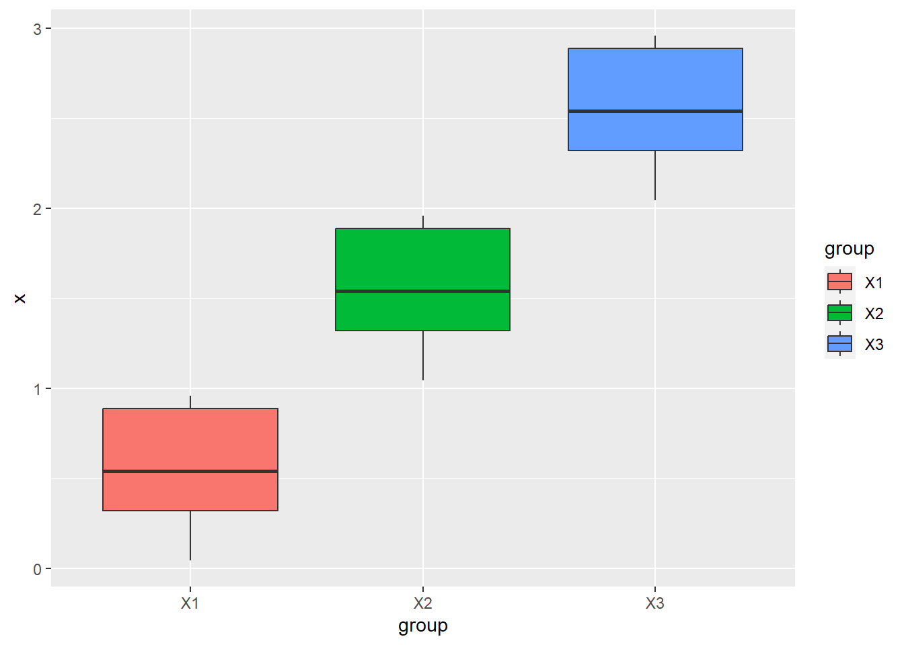
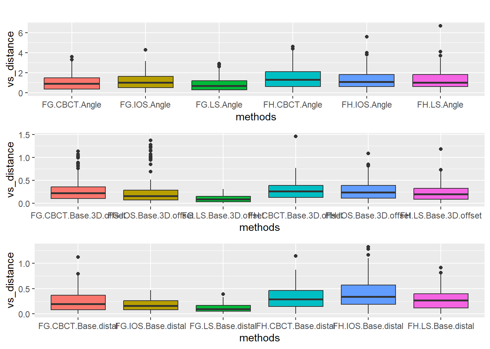
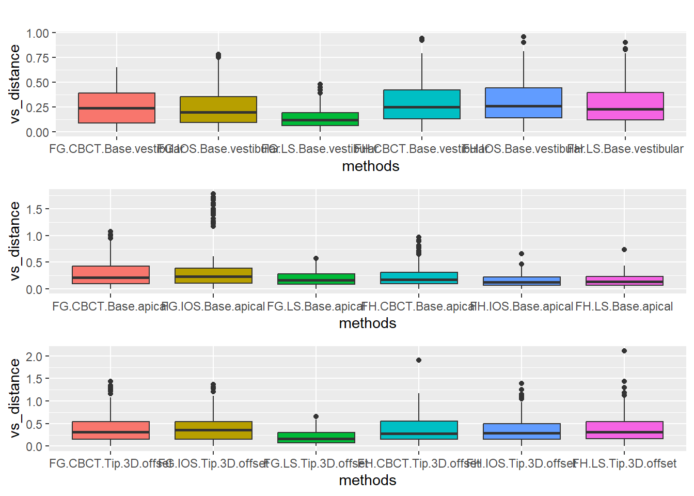
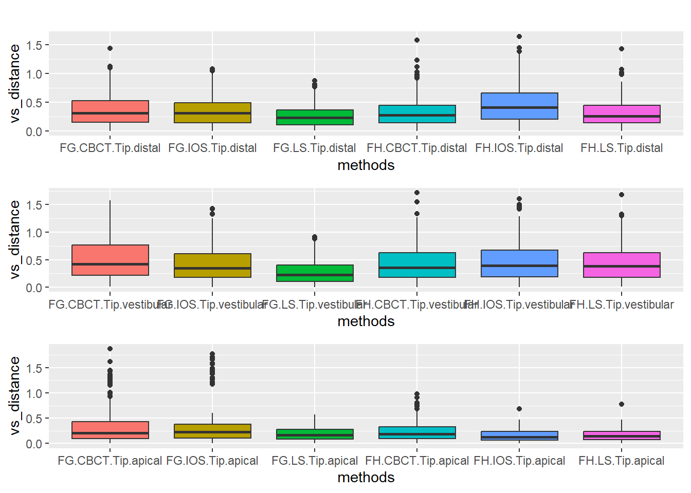

Last updated: 2023-01-13
Checks: 7 0
Knit directory: Collaborations/
This reproducible R Markdown analysis was created with workflowr (version 1.7.0). The Checks tab describes the reproducibility checks that were applied when the results were created. The Past versions tab lists the development history.
Great! Since the R Markdown file has been committed to the Git repository, you know the exact version of the code that produced these results.
Great job! The global environment was empty. Objects defined in the global environment can affect the analysis in your R Markdown file in unknown ways. For reproduciblity it’s best to always run the code in an empty environment.
The command set.seed(20210523) was run prior to running
the code in the R Markdown file. Setting a seed ensures that any results
that rely on randomness, e.g. subsampling or permutations, are
reproducible.
Great job! Recording the operating system, R version, and package versions is critical for reproducibility.
Nice! There were no cached chunks for this analysis, so you can be confident that you successfully produced the results during this run.
Great job! Using relative paths to the files within your workflowr project makes it easier to run your code on other machines.
Great! You are using Git for version control. Tracking code development and connecting the code version to the results is critical for reproducibility.
The results in this page were generated with repository version 54edaab. See the Past versions tab to see a history of the changes made to the R Markdown and HTML files.
Note that you need to be careful to ensure that all relevant files for
the analysis have been committed to Git prior to generating the results
(you can use wflow_publish or
wflow_git_commit). workflowr only checks the R Markdown
file, but you know if there are other scripts or data files that it
depends on. Below is the status of the Git repository when the results
were generated:
Ignored files:
Ignored: analysis/.Rhistory
Note that any generated files, e.g. HTML, png, CSS, etc., are not included in this status report because it is ok for generated content to have uncommitted changes.
These are the previous versions of the repository in which changes were
made to the R Markdown (analysis/2022_Oct1_Ajitesh.Rmd) and
HTML (docs/2022_Oct1_Ajitesh.html) files. If you’ve
configured a remote Git repository (see ?wflow_git_remote),
click on the hyperlinks in the table below to view the files as they
were in that past version.
| File | Version | Author | Date | Message |
|---|---|---|---|---|
| Rmd | 54edaab | Han | 2023-01-12 | 1/12/2023 |
| html | 54edaab | Han | 2023-01-12 | 1/12/2023 |
| html | 58d5f4e | Han | 2023-01-05 | 1/5/2023 |
| Rmd | 343320d | Han | 2022-12-13 | 12/13/2022 |
| html | 343320d | Han | 2022-12-13 | 12/13/2022 |
| Rmd | 41bdd23 | Han | 2022-12-13 | 12/13/2022 |
| html | 41bdd23 | Han | 2022-12-13 | 12/13/2022 |
| Rmd | 856e7a0 | Han | 2022-10-20 | 10/20/2022 |
| html | 856e7a0 | Han | 2022-10-20 | 10/20/2022 |
| Rmd | 0d5ea8e | Han | 2022-10-20 | 10/20/2022 |
| html | 0d5ea8e | Han | 2022-10-20 | 10/20/2022 |
| Rmd | b75126c | Han | 2022-10-19 | 10/19/2022 |
| html | b75126c | Han | 2022-10-19 | 10/19/2022 |
| Rmd | fe99b65 | Han | 2022-10-19 | 10/19/2022 |
| html | fe99b65 | Han | 2022-10-19 | 10/19/2022 |

FGASAnalysis of Variance Table
Response: Angle
Df Sum Sq Mean Sq F value Pr(>F)
methods 2 2.330 1.16504 1.6157 0.2077
Residuals 57 41.101 0.72108 FHASAnalysis of Variance Table
Response: Angle
Df Sum Sq Mean Sq F value Pr(>F)
methods 2 16.225 8.1127 6.3948 0.003122 **
Residuals 57 72.312 1.2686
---
Signif. codes: 0 '***' 0.001 '**' 0.01 '*' 0.05 '.' 0.1 ' ' 1FGAS has alpha 0.70 and FHAS has 0.91.
in this example, x2=x1+1; x3=x1+2
anova test suggests mean varies across 3 groups
Cronbach’s Alpha=1 indicates high reliability.
non paired two sample t test is used
mean_difference is mean difference of
group1-group2

mean_difference is mean difference of
group1-group2
sessionInfo()R version 4.2.2 (2022-10-31 ucrt)
Platform: x86_64-w64-mingw32/x64 (64-bit)
Running under: Windows 10 x64 (build 19044)
Matrix products: default
locale:
[1] LC_COLLATE=English_United States.utf8
[2] LC_CTYPE=English_United States.utf8
[3] LC_MONETARY=English_United States.utf8
[4] LC_NUMERIC=C
[5] LC_TIME=English_United States.utf8
attached base packages:
[1] stats graphics grDevices utils datasets methods base
other attached packages:
[1] psych_2.2.9 ltm_1.2-0 polycor_0.8-1 msm_1.7
[5] MASS_7.3-58.1 DT_0.26 rstatix_0.7.1 ggpubr_0.5.0
[9] kableExtra_1.3.4 forcats_0.5.2 stringr_1.5.0 dplyr_1.0.10
[13] purrr_0.3.5 readr_2.1.3 tidyr_1.2.1 tibble_3.1.8
[17] ggplot2_3.4.0 tidyverse_1.3.2
loaded via a namespace (and not attached):
[1] nlme_3.1-160 fs_1.5.2 lubridate_1.9.0
[4] webshot_0.5.4 httr_1.4.4 rprojroot_2.0.3
[7] tools_4.2.2 backports_1.4.1 bslib_0.4.2
[10] utf8_1.2.2 R6_2.5.1 DBI_1.1.3
[13] colorspace_2.0-3 withr_2.5.0 mnormt_2.1.1
[16] tidyselect_1.2.0 gridExtra_2.3 compiler_4.2.2
[19] git2r_0.30.1 cli_3.4.1 rvest_1.0.3
[22] expm_0.999-6 xml2_1.3.3 labeling_0.4.2
[25] sass_0.4.4 scales_1.2.1 mvtnorm_1.1-3
[28] systemfonts_1.0.4 digest_0.6.31 rmarkdown_2.19
[31] svglite_2.1.0 pkgconfig_2.0.3 htmltools_0.5.4
[34] dbplyr_2.2.1 fastmap_1.1.0 highr_0.9
[37] htmlwidgets_1.6.0 rlang_1.0.6 readxl_1.4.1
[40] rstudioapi_0.14 jquerylib_0.1.4 generics_0.1.3
[43] farver_2.1.1 jsonlite_1.8.4 crosstalk_1.2.0
[46] car_3.1-1 googlesheets4_1.0.1 magrittr_2.0.3
[49] Matrix_1.5-1 Rcpp_1.0.9 munsell_0.5.0
[52] fansi_1.0.3 abind_1.4-5 lifecycle_1.0.3
[55] stringi_1.7.8 whisker_0.4.1 yaml_2.3.6
[58] carData_3.0-5 grid_4.2.2 parallel_4.2.2
[61] promises_1.2.0.1 crayon_1.5.2 lattice_0.20-45
[64] splines_4.2.2 haven_2.5.1 cowplot_1.1.1
[67] hms_1.1.2 knitr_1.41 pillar_1.8.1
[70] ggsignif_0.6.4 admisc_0.30 reprex_2.0.2
[73] glue_1.6.2 evaluate_0.19 modelr_0.1.10
[76] vctrs_0.5.1 tzdb_0.3.0 httpuv_1.6.7
[79] cellranger_1.1.0 gtable_0.3.1 assertthat_0.2.1
[82] cachem_1.0.6 xfun_0.35 broom_1.0.2
[85] later_1.3.0 survival_3.4-0 googledrive_2.0.0
[88] viridisLite_0.4.1 gargle_1.2.1 workflowr_1.7.0
[91] timechange_0.1.1 ellipsis_0.3.2